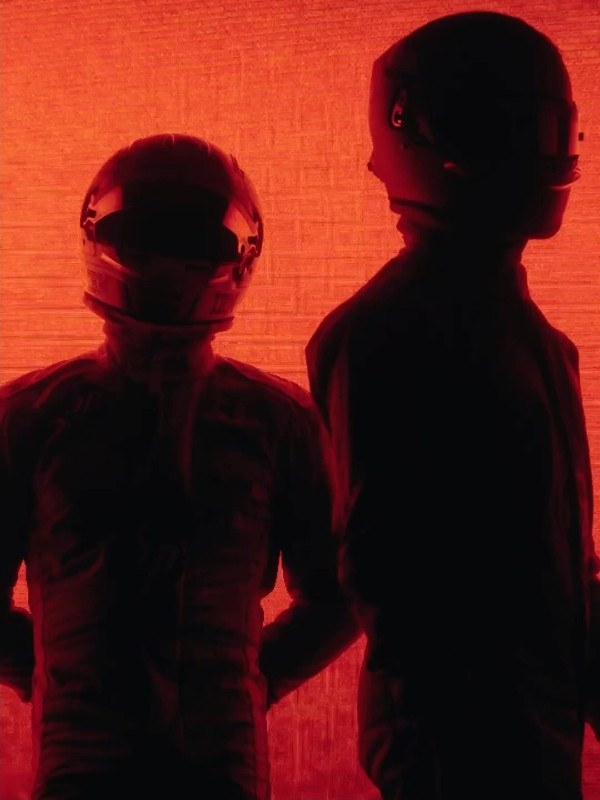
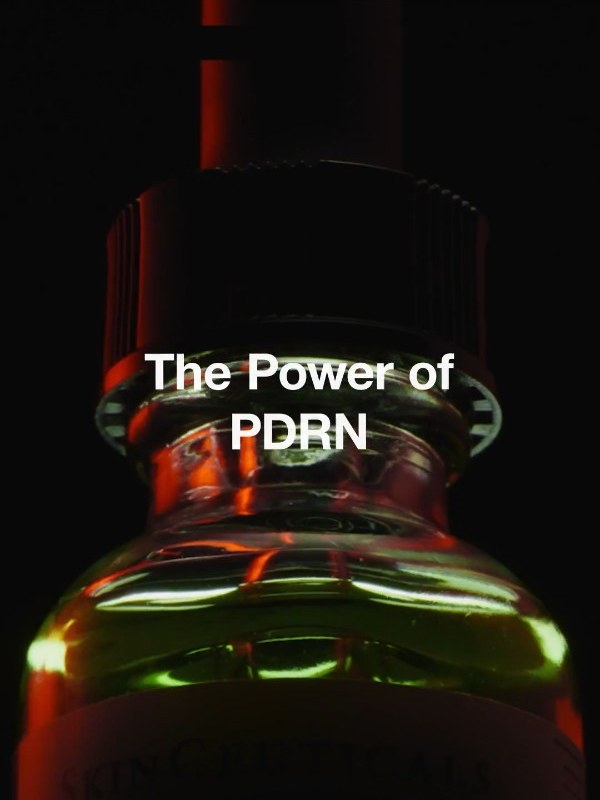
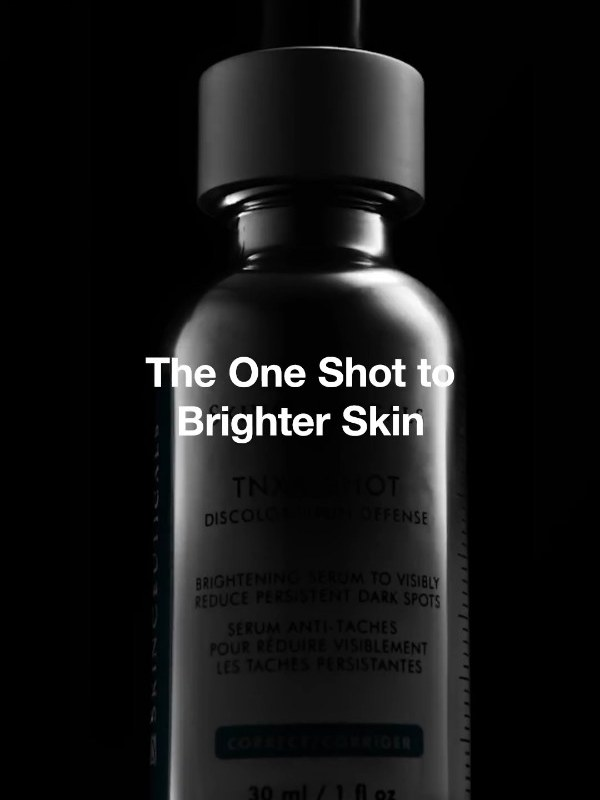

SkinCeuticals
@skinceuticals · ۲ میلیون
چرا موفق شد: فقط از راه پزشک فروخته میشود و با این حال سینمایی و خواستنی است: نور تیز، محصول وسط قاب.
برای ما: «پزشکی» یعنی خشک نیست. پستهای محصولمحور با یک جمله، بدون ادعای برتری.